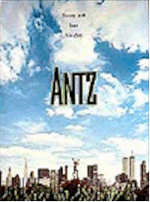
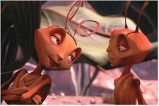
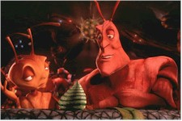
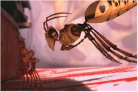

Contents | Features | Reviews | News | Archives | Store |
 |
|
| Movie Credits | Buy It! |
Antz
Review by Eddie Cockrell
Posted 2 October 1998
|  | Directed by Eric Darnell, Tim Johnson Starring
the voices of Woody Allen, Dan Aykroyd, Screenplay by Todd Alcott, |
"Don't worry, I know almost exactly what I'm doing," dyspeptic worker ant Z-4195 (Woody Allen) confides to new love Princess Bala (Sharon Stone) before he saves the entire colony from genocide at the, uh, hands of evil General Mandible (Gene Hackman) towards the end of Antz, and his reluctant battle cry could well serve as a motto for the entire enterprise. The much-ballyhooed new movie, the latest bid by DreamWorks SKG to unseat Disney's reign as the chief provider of popular, hi-tech animated films for all ages, knows almost exactly what it's doing, courtesy of dazzling computer-generated animation (the first film made entirely in that medium since the Mouse Factory's pioneering Toy Story) produced in Palo Alto, California -- the heart of Silicon Valley -- by Pacific Data Images. Unfortunately, what's missing from the equation (the "almost" part of "exactly") is a heart beating underneath the glossy exterior: shallow and cliched, Antz is eighty-five minutes of technical wizardry lacking any of the fairytale sense of wonder promised by the bold new frontiers of the medium.
First seen in analysis (complaining of his fate as "a middle child in a family of five million," he's told by shrink Paul Mazursky, "You ARE insignificant."), the suspiciously Woody Allen-ish Z dreams of a better place and a better life, a fantasy fueled by a chance encounter with a bar drunk scout ant ("Frasier"'s John Mahoney) who tells him of a shimmering "Insectopia" just beyond the confines of the totalitarian underground world. It's not a fantasy shared by either Z's spunky but subservient co-worker Azteca (Jennifer Lopez) or Z's pal Weaver (Sylvester Stallone), a slab-jawed warrior ant. Still, it is something to think about and dream of -- and, in Z's case, kvetch and fret over. Meanwhile, Princess Bala (Stone), chafing over the promise her mother the Queen (Anne Bancroft) made to marry her off to Mandible, slips away from the palace for a night at the very same bar, where she boldly asks Z -- the only one not dancing -- to cut some rug (their dance includes a brief but amusing doff of the hat to Pulp Fiction).
Smitten, Z swaps places with Weaver to march past Bala as the troops are reviewed, and subsequently manages to be the only one to survive a violent surprise battle with termites Mandible forces the ants in to as part of his scheme for total domination (he's aided by his aid, Colonel Cutter, voiced by Christopher Walken). Returning a war hero after the death of his new friend Barbatus (Danny Glover), Z accidentally kidnaps Bala and begins an adventure in the great outdoors that includes WASPish wasps Muffy (Jane Curtin) and Chip (Dan Aykroyd) as well as the film's best sequence, an exhilarating ride on a wad of bubble gum affixed to the bottom of a child's sneaker.
Antz was directed by Eric Darnell and Tim Johnson, two veterans of the CGI wars who coordinated the groundbreaking facial animations, crowd systems and water effects that make the movie such a detailed technical wonder. Interestingly, Darnell left PDI briefly to help develop the upcoming DreamWorks animated epic The Prince of Egypt (he was back in time to work on Antz) and Johnson is the guy responsible for the sequence in that odd and very funny "Simpsons" Halloween episode where Homer and Bart are transported to a 3-D world. Jarringly, while some characters in Antz look more like their human counterparts than others (Weaver looks strikingly like Stallone, Azteca looks vaguely like Jennifer Lopez and Z is kind of a plush-toy version of Allen), none of the characters are even of the cute-gross variety kids like; rather, they're downright grotesque, sort of like those sad, large-eyed kids and animals in cheap paintings. And come on, ants with perfect teeth?
One of the very best things about the entire enterprise is the sprightly music of Harry Gregson-Williams and John Powell, which is supplemented by Neil Finn's rendition of "I Can See Clearly Now," a clever use of "Guantanamera" (which was co-written by Pete Seeger), special permission from Yoko Ono to use a snippet of John Lennon's "Give Peace a Chance," the Jimmy van Heusen/Sammy Cahn Oscar-winning chestnut "High Hopes" (first heard in Frank Capra's 1959 A Hole in the Head, starring Frank Sinatra), and even Woody himself crooning Lerner & Loewe's "Almost Like Being in Love."
While Gregson-Williams and Powell do their part to liven things up, Antz finally peters out not as a march, but a limp. Too pseudo-hip for kids, far too simplistic for adults (the brief trailers for The Rugrats Movie, Disney's rival production, A Bug's Life, and even the apparently more weighty Prince of Egypt look a lot more interesting) and much too dramatically overblown for the simple messages of its story, the movie tries to make a mountain out of an anthill. One doesn't want to dismiss the exciting technical achievement on display in Antz out of hand, but it's a pity there couldn't have been more steak with the sizzle.
Contents | Features
| Reviews | News | Archives | Store
Copyright © 1999 by Nitrate Productions, Inc. All Rights
Reserved.